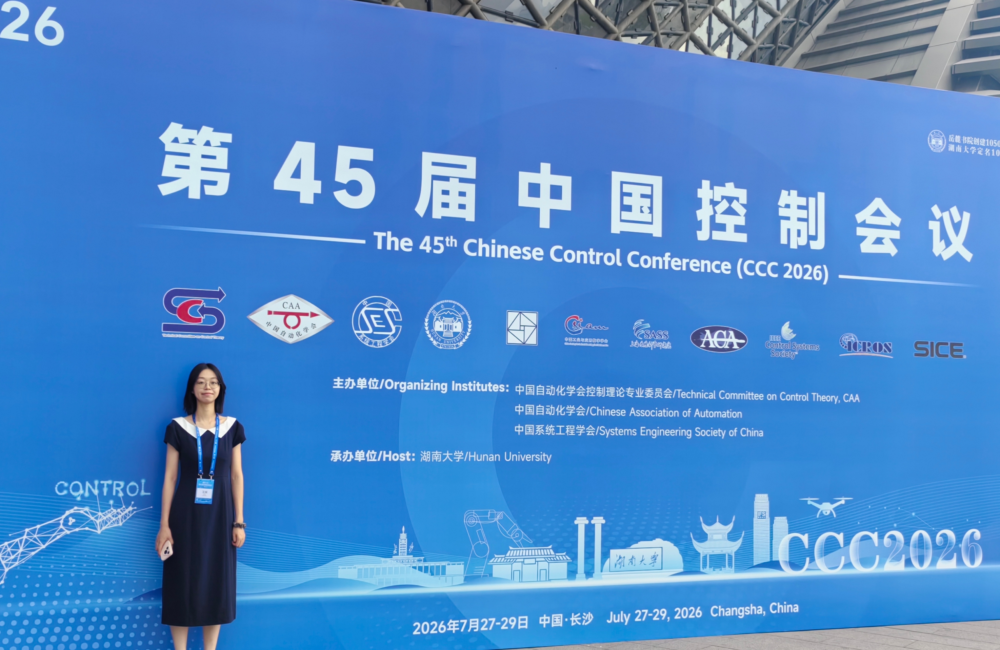
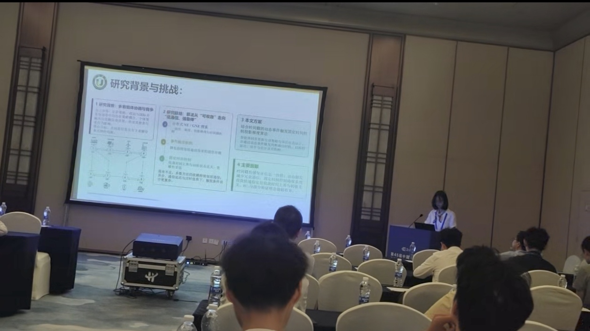
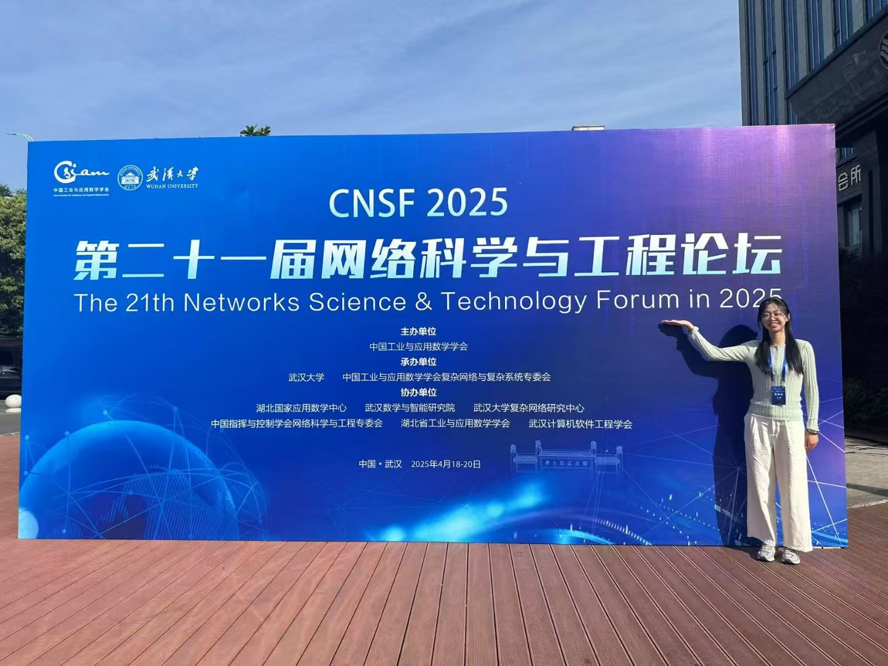
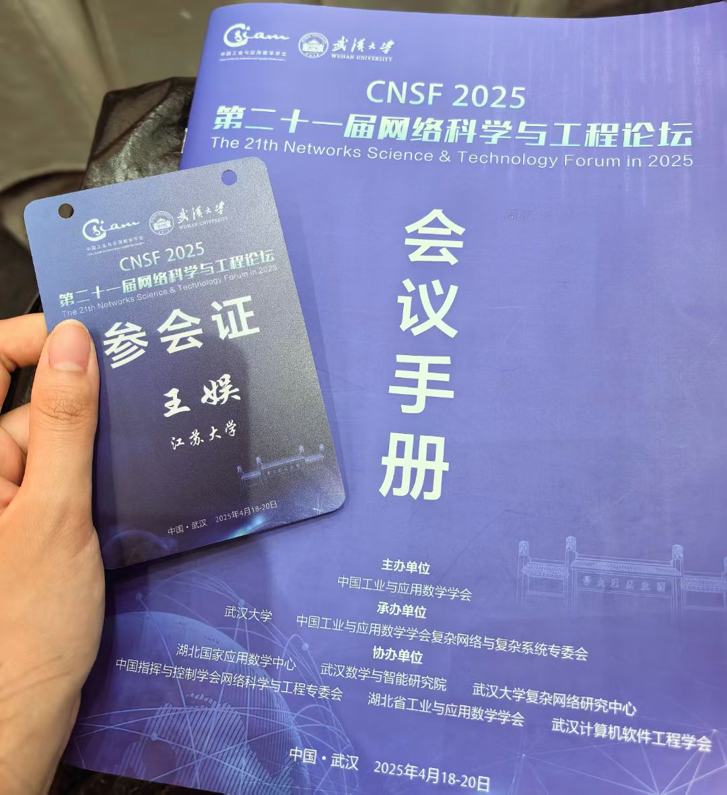

Introduced TDE-PGD and DP-TDE-PGD, combining timestamp-based event-triggered communication with decaying Laplace noise to balance efficiency, privacy, and convergence.
针对非合作多玩家单调博弈的分布式纳什均衡求解；递减步长下证明收敛，并通过多种图结构与博弈仿真验证。Distributed Nash equilibrium seeking for noncooperative multiplayer monotone games; convergence established under diminishing step sizes and evaluated across graph and game settings.
在投论文Under review
Distributed Nash Equilibrium Seeking With Compressed and Event-triggered/Self-triggered Communication
提出 CET-PGD 与 CST-PGD，通过差分压缩通信降低多智能体点对点通信负担与能耗。
Proposed CET-PGD and CST-PGD, using differential compression to reduce point-to-point communication load and energy consumption.
以一般 r-缩放在接收端重构估计，通过 Lyapunov 分析证明固定时间实用收敛，并验证通信比特节省效果。Receiver-side reconstruction via general r-scaling; Lyapunov analysis establishes fixed-time practical convergence, with simulations showing communication-bit savings.
04 / PUBLICATION
发表成果与学术会议Publication & Conference
First Author · 2026
Dynamic Event-Triggered Fixed-Time Control for Distributed Nash Equilibrium Seeking
Chinese Control Conference 会议论文 · EI 检索Chinese Control Conference proceedings · EI indexed
参加学术会议 2 次，完成学术汇报 1 次（2026 中国控制会议）。
Attended two academic conferences and delivered one presentation at the 2026 Chinese Control Conference.

Chinese Control Conference · 2026

学术汇报现场Academic presentation

CNSF · 2025会议留影Conference moment

参会手册与证件Program & badge
01 / 05左右翻阅flip through
05 / UNIVERSITY
江苏大学Jiangsu University
江苏大学 · 数学科学学院School of Mathematical Sciences
本科与硕士阶段均就读于江苏大学。这里是我学习数学、开展研究并不断探索的地方。
I completed both my undergraduate and graduate studies at Jiangsu University, where I learned mathematics and began my research journey.